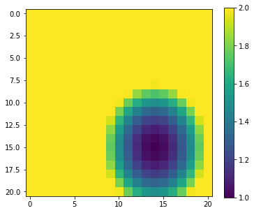
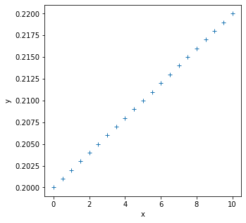
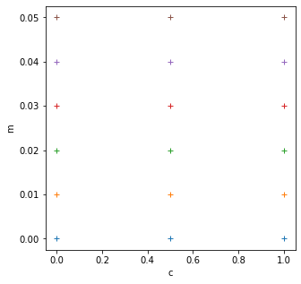
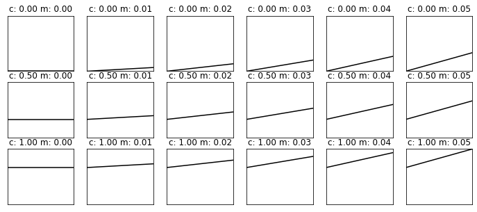

032 More numpy
Purpose
We continue our exploration of numpy and move onto topics we need for efficient array processing.
Prerequisites
You will need to know the material from 031_Numpy in detail.
np.loadtxt
Let's access an interesting dataset on the frequency of satellite launches to illustrate this.

The library code geog0111.nsat accesses a database at https://www.n2yo.com and gets a table satellite launch data.
Data from this is stored in the datafile data/satellites-1957-2021.gz. This is a compressed text file.
We can use np.loadtxt to read files of this nature into numpy arrays in a similar way to how we read into panadas. If the dataset is not CSV but simply a whitespaced text file, it is often easier to use np.loadtxt than pandas.
In the case of this dataset, we wish to interpret the launch counts as integers, so we convert the data we read to integers.
import numpy as np
filename = 'data/satellites-1957-2021.gz'
data=np.loadtxt(filename).astype(np.int)
# shape of data
print(data.shape)
(12, 64)
The dataset dimensions are to (month,year). Indices into the array are zero-based, so we can relate month number (1 being January) and year number to index (i,j) through:
i = month - 1
j = year - 1957
We can print some summary statistics:
print(f'data shape {data.shape}')
print(f'some summary statistics over the period 1957 to 2021:')
print(f'The total number of launches is {data.sum()}')
print(f'The mean number of launches is {data.mean() : .2f} per month')
data shape (12, 64)
some summary statistics over the period 1957 to 2021:
The total number of launches is 45689
The mean number of launches is 59.49 per month
slicing, slice
We have seen above how we can provide a tuple of indices to access particular array elements. Often we want to access 'blocks' of an array. A set of indices would be inefficient for that. Instead, we use the idea of slices (from:to:step) that we have come across before for strings . Remember that to is "up to but not including" the to number.
If we specify : or :: in the slice, it means we take the defaults for (from:to:step). If we specify only one number, that is from. If we specify two, it is from:to.
So:
data[0]
is the data for month index 0 (January), data[1] for February etc. Or:
data[0:2]
is the data for month index 0 (January) and 1 (February) etc.
We can get more specific statistics then such as:
import numpy as np
filename = 'data/satellites-1957-2021.gz'
data=np.loadtxt(filename).astype(np.int)
print(data[0].shape)
print(f'mean launches in month 0: {data[0].mean() :.2f}')
print(f'max launches in month 0: {data[0].max()}')
(64,)
mean launches in month 0: 33.95
max launches in month 0: 237
We can refer to items in the second dimension of the array, by using a code for all values of the first dimension. So:
data[:,0]
refers to all elements in dimension 0 (i.e. all months here) by only year 0 (1957).
print(data[:,0].shape)
print(f'mean launches in year 1957: {data[:,0].sum()}')
print(f'max launches in year 1957: {data[:,0].max()}')
(12,)
mean launches in year 1957: 3
max launches in year 1957: 2
Exercise 1
- Print out the total number of launches per month, for each month.
- Print out the total number of launches per year, for the years 2010 to 2020 inclusive
The numpy formatting for slice in an array is start:stop:step as we have seen. Sometimes it is convenient to use the function slice(start:stop:step) to specify this.
Recall that the array data is two-dimensional of shape (12, 64) where the first axis is month and the second year after 1957. To describe the months of May to July inclusive (axis 0: index 4:7) and years 1990-2000 inclusive (axis 1: index 1990-1957:2000-1957+1 = 33:44) we can write:
subset = data[4:7,33:44]
print(f'shape of subset is {subset.shape}')
shape of subset is (3, 11)
Equivalently, using slice:
axis0 = slice(4,7)
axis1 = slice(33,44)
subset = data[axis0,axis1]
print(f'shape of subset is {subset.shape}')
print(f'slices: {axis0},{axis1}')
shape of subset is (3, 11)
slices: slice(4, 7, None),slice(33, 44, None)
One advantage of using slice is that we can store the axis slice information in a variable. We access the individual elements as:
axis0.start,axis0.stop,axis0.step
(4, 7, None)
Exercise 2
import numpy as np
filename = 'data/satellites-1957-2021.gz'
data=np.loadtxt(filename).astype(np.int)
- Use
sliceto produce a sub-set of the launch datasetdatafor the months January, March, and May for the years 1960-1966 inclusive. This is 3 months and 7 years, so the resultant array should have shape(3,7)
axis
Whilst it is perfectly possibly to loop over one dimension of an array and calculate statistics over the other dimension, it is not very Pythonic to do it that way.
Instead. we can specify the array axes over which we want the operation to occur.
For example, in our satellite launch dataset, the dimension 0 is month index and the dimension 1 is year index. To calculate the mean over all years then, we apply the mean function to axis 1:
import numpy as np
filename = 'data/satellites-1957-2021.gz'
data=np.loadtxt(filename).astype(np.int)
# mean over all years
data.mean(axis=1)
array([ 33.953125, 58.515625, 45.234375, 49.734375, 103.21875 ,
90.1875 , 51.234375, 38.765625, 68.78125 , 63.046875,
51.140625, 60.078125])
This is much more convenient than the loop we did above. The axis keyword is widely used in numpy, and you can apply most operations over one or more axis.
Exercise 3
- Plot the total number of satellite launches per year, as a function of year
You will need to remember how to plot line graphs
argmin, argmax
Whilst we have generated some initial summary statistics on the dataset, it's not really enough to give us a good idea of the data characteristics.
To do that, we want to be able to ask somewhat more complex questions of the data, such as:
- which year has the most/least launches?
- which month do most launches happen in?
- which month in which year had the most launches?
- which years had more than 100 launches?
Whilst we could do some of these with loops and slicing, we expect a more convenient approach for numpy.
To be able to address these, we need some new concepts:
- methods
argmin()andargmax()that provide the index where the min/max occurs - masking out array elements that meet some condition
The first set of these, argmin() and argmax() are straightforward to visualise and use:
import numpy as np
# read data as before
filename = 'data/satellites-1957-2021.gz'
data=np.loadtxt(filename).astype(np.int)
# sum the data over all months (axis 0)
sum_per_year = data.sum(axis=0)
# Construct an array of years
year_array = 1957 + np.arange(data.shape[1])
# Find the location (year) with **most** launches
# Find the index of sum_per_year with highest number (argmmax)
imax = np.argmax(sum_per_year)
# Find the location (year) with **least** launches
# Find the index of sum_per_year with lowest number (argmmax)
imin = np.argmin(sum_per_year)
print(imin,imax)
print(f'the year with most launches was',\
f'{year_array[imax]} with {sum_per_year[imax]}')
print(f'the year with fewest launches was',\
f'{year_array[imin]} with {sum_per_year[imin]}')
0 42
the year with most launches was 1999 with 4195
the year with fewest launches was 1957 with 3
Exercise 4
- Write code to print the months with highest and lowest number of launches
masking
In section 011_Python_data_types we came across the boolean (binary) data type that can take the states True or False.
Boolean arrays in numpy are important in the efficient use of arrays, as they can act as a mask on an array.
For example:
The form of filtering above (high = sum_per_year >= 1000) produces a numpy array of the same shape as that operated on (sum_per_year here) of bool data type. It has entries of True where the condition is met, and False where it is not met.
import numpy as np
# read data as before
filename = 'data/satellites-1957-2021.gz'
data=np.loadtxt(filename).astype(np.int)
# sum over all months (axis 0)
sum_per_year = data.sum(axis=0)
high = sum_per_year >= 1000
print(high)
[False False False False False False False False True False False False
False False False False False False True True False False False False
True False False False False True True False False False False False
True True False False False False True False False False False False
False True False False False False False False False False False False
False False False False]
We can think of this logical array as a 'data mask' that we use to select (filter) entries:
# form the data mask
high = (sum_per_year >= 1000)
# form an attau of years
years = 1957 + np.arange(data.shape[1])
# select only elements where mask is True
print(f'years with 1000 or more launches {years[high]}')
years with 1000 or more launches [1965 1975 1976 1981 1986 1987 1993 1994 1999 2006]
We can apply logical operators to boolean arrays:
low = np.logical_not(high)
print(low)
[ True True True True True True True True False True True True
True True True True True True False False True True True True
False True True True True False False True True True True True
False False True True True True False True True True True True
True False True True True True True True True True True True
True True True True]
including combinations of logical arrays.
Suppose we want to know the years after the year 2000 that have 1000 or greater launches. We can form two boolean arrays:
years > 2000
sum_per_year >= 1000
Since these arrays are of the same shape, we can combine them element-wise:
c1 = (years > 2000)
c2 = (sum_per_year >= 1000)
combined = np.logical_and(c1,c2)
print(years[combined])
[2006]
where
Sometimes, instead of just applying the filter as above, we want to know the indices of the filtered values.
To do this, we can use the np.where() method. This takes a bool array as its argument (such as our data masks or other conditions) and returns a tuple of the indices where this is set True.
As an example, lets find month, year pairs where the number of launches is greater than 500.
For a final flourish, we load the dataset into pandas to print it in a table:
# find month, year where launches > 500
import numpy as np
import pandas as pd
# read data as before
filename = 'data/satellites-1957-2021.gz'
data=np.loadtxt(filename).astype(np.int)
month_index,year_index = np.where(data > 500)
# This gives array indices
# convert index to real month and year
# and *transpose* (swap rows and columns)
# using .T
high_launches = np.array([month_index+1,year_index+1957]).T
# load into pandas data frame
df = pd.DataFrame(high_launches,columns=['month','year'])
df
| month | year | |
|---|---|---|
| 0 | 2 | 1986 |
| 1 | 5 | 1994 |
| 2 | 5 | 1999 |
| 3 | 6 | 1981 |
| 4 | 6 | 1993 |
| 5 | 6 | 2006 |
| 6 | 7 | 1976 |
| 7 | 9 | 1997 |
Simplifying shape: flatten, ravel, reshape and unravel_index
We have seen that we can build multi-dimensional arrays in numpy. Sometimes, for processing though, we need to modify the number of dimensions of an array. There are several ways to do this.
First, if we want simply to collapse a multi-dimensional array into a 1D array, we can use ravel or flatten. A useful case to consider for this is when we process on a grid.
We generate a grid of locations similar to previously:
import numpy as np
p0min,p0max,p0step = -1.0,1.0,0.1
p1min,p1max,p1step = -1.0,1.0,0.1
p0,p1 = np.mgrid[p0min:p0max+p0step:p0step,\
p1min:p1max+p1step:p1step]
print(f'shape of p0 : {p0.shape}')
print(f'shape of p1 : {p1.shape}')
shape of p0 : (21, 21)
shape of p1 : (21, 21)
Now, we want to calculate a function of the variables p0 and p1 and want to find the parameter values at which the function has a local (over the grid) minimum. We will use the function:
y = 1 + 2 * (p0 - 0.5)**2 + 3 * (p1 - 0.4)**2
as an example, or the range [-1,1] for both parameters. It should be clear that the minimum of this function lies at (0.5,0.4), but we want to show this numerically.
import matplotlib.pyplot as plt
# our function
y = 1 + 2 * (p0 - 0.5)**2 + 3 * (p1 - 0.4)**2
# plot it
fig, axs = plt.subplots(1,1,figsize=(6,5))
im = axs.imshow(y,interpolation='nearest',vmax=2)
fig.colorbar(im, ax=axs)
<matplotlib.colorbar.Colorbar at 0x7fc715dd7490>

np.argmin(y)
329
We could use np.where to find the index of the minimum point by seeking where it equals the minimum value. That is not always a good idea, as there might be rounding errors involved.
A more robust approach is to use np.argmin to find the index at which the argument has its minimum.
imin = np.argmin(y)
print(f'index of minimum point: {imin}')
index of minimum point: 329
The index of 329 is returned which might at first seem odd: the array y is two dimensional of shape (21,21) so how can we have a 1D index of 329?
The answer is that np.argmin operates on a 'flattened' version of the array. When we used it above this issue was not apparent because the input array was 1D.
If we want to apply the flattened array index, we must first then flatten the array. There are two functions for this: flatten and ravel. They both have a similar effect, but flatten operates of a copy of the array. This means it uses more memory. But also any changes we make are not reflected in the original array. Very often we use ravel instead then. This takes no more memory, but any changes we make to the ravelled array will also happen to the original array. You should think carefully about which you use in any particular circumstance, but unless you really need to operate on a copy, you might generally use ravel.
yrav = y.ravel()
print(f'shape of y : {y.shape}')
print(f'shape of yrav : {yrav.shape}')
p0min,p1min = p0.ravel()[imin],p1.ravel()[imin]
print(f'parameter at minimum : {p0min : .3f},{p1min : .3f}')
shape of y : (21, 21)
shape of yrav : (441,)
parameter at minimum : 0.500, 0.400
which matches what we expected.
These two functions are an integral part of efficient use of numpy for large-dimensional problems. We can recognise in the example above that it makes no difference to the processing whether we search for the argmin over a 1D or 2D array. It makes sense then to treat it as a 1D problem.
The same sort of issues arise when we are dealing with image processing: although an image is defined over a 2D spatial extent, if the algorithm we are applying is operated independently per pixel, then this can be equally treated as a 1D problem. If we had a problem to solve over an image space and over a parameter space (as we come across see later) then we can simplify our data structure by collapsing unnecessary multi-dimensional arrays into 1D arrays. In that case, it might not always be possible to use ravel as we might need to 'flatten' different parts of the dataset in different fashions. For this, more refined control on array shape, we use reshape.
To illustrate this, we generate a function y over the parameter space p0, p1 that we suppose described our function at different time steps:
y0 = 1 + 2 * (p0 - 0.5)**2 + 3 * (p1 - 0.4)**2
y1 = 1 + 4 * (p0 - 0.2)**2 + 3 * (p1 - 0.1)**2
y2 = 1 + 8 * (p0 - 0.7)**2 + 6 * (p1 - 0.3)**2
y = np.array([y0,y1,y2])
print(f'shape of y : {y.shape}')
shape of y : (3, 21, 21)
y is a 3D array with the first axis representing time, and the second and third the parameter space. We can see that the minima should occur at [0.5 0.2 0.7],[0.4 0.1 0.3]
We wish to find parameters that give the minimum of the function for each time step (i.e. solve numerically for [0.5 0.2 0.7],[0.4 0.1 0.3]). The result we expect then is that each parameter should be an array of shape (3,).
We can use np.argmin again for this problem, as we can specify the axis over which to operate for argmin. However, it can only operate over a single axis, so we must first re-form the array to one of shape (3,21 * 21). The shape of the first dimension will be simply y.shape[:1]. We can multiply the last two elements of the shape array together using np.prod as np.prod(np.array(y.shape[1:])), then use the new shape with np.reshape:
# get the new shape we want
firstpart = y.shape[:1]
print(firstpart)
secondpart = np.prod(np.array(y.shape[1:]))
print(secondpart)
# use * to unload the tuple
newshape = (*y.shape[:1],np.prod(np.array(y.shape[1:])))
print(newshape)
(3,)
441
(3, 441)
# reshape
y_ = y.reshape(newshape)
print(f'shape of y : {y.shape}')
print(f'shape of y_ : {y_.shape}')
shape of y : (3, 21, 21)
shape of y_ : (3, 441)
# argmin over axis 1 (the parameters)
imin = np.argmin(y_,axis=1)
print(f'1D index of minimum point: {imin}')
1D index of minimum point: [329 263 370]
We may want to know the 2D index in the parameter grid for some applications. This can be conveniently calculated with np.unravel_index:
ip0min,ip1min = np.unravel_index(imin,p0.shape)
print(f'2D index of minimum point: {ip0min}, {ip1min}')
p0min = p0[ip0min,ip1min]
p1min = p1[ip0min,ip1min]
print(f'parameter at minimum : {p0min},{p1min}')
2D index of minimum point: [15 12 17], [14 11 13]
parameter at minimum : [0.5 0.2 0.7],[0.4 0.1 0.3]
which corresponds with what we expected.
That's great: by appropriate use of reshape we have found the flattened-parameter index for each of the time samples where the function is minimum.
We could then print the parameters at the minimum as above, using the index array imin as indices into the flattened parameter arrays:
p0min,p1min = p0.ravel()[imin],p1.ravel()[imin]
print(f'parameter at minimum : {p0min},{p1min}')
parameter at minimum : [0.5 0.2 0.7],[0.4 0.1 0.3]
Reconciling arrays: np.newaxis
numpy is very efficient at array-based processing. This means that for your codes to be efficient, you should avoid any explicit loops when dealing with large datasets. We will come across examples later where this is critical to being able to process data in a reasonable time.
Let's consider the case where we have some function that calculates the linear function:
y = c + m*x
where x is some numpy array of values of x and the linear model parameters are c (intercept) and m (slope). This is efficient in numpy and straightforward to do if c and m are scalar values (i.e. just a float number):
import matplotlib.pyplot as plt
import numpy as np
def linear_func(c,m,x):
return m * x + c
# example parameters
c = 0.2
m = 0.002
# the x values
x = np.arange(0,10.5,0.5)
y = m* x + c
fig, axs = plt.subplots(1,1,figsize=(5,5))
axs.plot(x,y,'+')
axs.set_xlabel('x')
axs.set_ylabel('y')
print(f'x-shape: {x.shape}')
print(f'y-shape: {y.shape}')
x-shape: (21,)
y-shape: (21,)

Now let's try to calculate the model y = c + m * x for these same values of x, but for multiple sets of c and m. We will use np.mgrid as above to generate a grid of pairs of c and m:
import matplotlib.pyplot as plt
# define the min and max and step for the grid we want
c_min,c_max,c_step = 0.0,1.,0.5
m_min,m_max,m_step = 0.0,0.05,0.01
grid_c,grid_m = np.mgrid[c_min:c_max+c_step:c_step,\
m_min:m_max+m_step:m_step]
print(f'grid_c is {grid_c}')
print(f'grid_m is {grid_m}')
# plot it
fig, axs = plt.subplots(1,1,figsize=(5,5))
axs.plot(grid_c,grid_m,'+')
axs.set_xlabel('c')
axs.set_ylabel('m')
print(f'2d parameter grid: {grid_c.shape}')
grid_c is [[0. 0. 0. 0. 0. 0. ]
[0.5 0.5 0.5 0.5 0.5 0.5]
[1. 1. 1. 1. 1. 1. ]]
grid_m is [[0. 0.01 0.02 0.03 0.04 0.05]
[0. 0.01 0.02 0.03 0.04 0.05]
[0. 0.01 0.02 0.03 0.04 0.05]]
2d parameter grid: (3, 6)

This grid is (3,6) and the x dataset is shape (21,).
We would expect the output dataset y that describes c + m*x for all x, for each value of c and m to have a shape (3,6,21). Here, axis 0 and 1 refer to the parameter grid dimensions and axis 2 to the variation over x. The operation is a simple element-wise manipulation that numpy should be efficient at, even for large arrays. We will see that the key to doing this cleanly is to use np.newaxis.
An inefficient way of calculating y for each of the grid parameters would be to use a loop over each value of x:
print(f'for a single value of x, we get an output of shape {linear_func(grid_c,grid_m,0.1).shape}')
for a single value of x, we get an output of shape (3, 6)
# generate an output array to pack into
newshape = grid_c.shape + x.shape
y = np.zeros(newshape)
print(f'y shape: {y.shape}')
# inifficient: looping over each element of x -> xi
# and inserting into grid
for i,xi in enumerate(x):
y[:,:,i] = linear_func(grid_c,grid_m,xi)
y shape: (3, 6, 21)
import matplotlib.pyplot as plt
ymin,ymax = y.min(),y.max()
xmin,xmax = x.min(),x.max()
# plots:
fig, axs = plt.subplots(*(grid_c.shape),figsize=(12,5))
plt.setp(axs, xticks=[], yticks=[])
for i in range(y.shape[0]):
for j in range(y.shape[1]):
axs[i,j].plot(x,y[i,j],'k')
axs[i,j].set_title(f'c: {grid_c[i,j]:.2f} m: {grid_m[i,j]:.2f}')
axs[i,j].set_xlim(xmin,xmax)
axs[i,j].set_ylim(ymin,ymax)

So, we know the sort of result we are looking for from this, ideally we would do it in a single call to the function with numpy.
In all of the simple cases above, we have performed operations of arrays of the same shape, so adding an array of shape (10,2) to another of the same shape results in an array of shape (10,2).
If we have an array of shape (10,2,1) and add it to an array of shape (1,1,5), we will get a result of shape (10,2,5):
import numpy as np
# generate some random numbers
a = np.random.random((10,2,1))
b = np.random.random((1,1,5))
c = a + b
print(c.shape)
(10, 2, 5)
The 'rule' for combining arrays in this way can be thought of as:
- the arrays to be combined must have the same number of dimensions (3 here)
- the number of samples in any dimension must be the same or
1
If we had started out with arrays of different shapes that we want to combine, e.g.:
import numpy as np
# generate some random numbers
a = np.random.random((10,2))
b = np.random.random((5))
Then we need to add new axes to the arrays to reconcile their dimensions. One clear way to do this is to use np.newaxis to add the new dimensions:
a = np.random.random((10,2))
b = np.random.random((5,))
print(f'a shape: {a.shape}')
print(f'b shape: {b.shape}')
a1 = a[:,:,np.newaxis]
b1 = b[np.newaxis,np.newaxis,:]
print(f'a1 shape: {a1.shape}')
print(f'b1 shape: {b1.shape}')
c1 = a1 + b1
print(f'c1 shape: {c1.shape}')
a shape: (10, 2)
b shape: (5,)
a1 shape: (10, 2, 1)
b1 shape: (1, 1, 5)
c1 shape: (10, 2, 5)
Now, we can do element-wise operations of a and b as required, where the result will be of shape (10,2,5) and involve all element-wise combinations of a and b.
Exercise 5
def linear_func(c,m,x):
return m * x + c
x = np.arange(0,10.5,0.5)
c_min,c_max,c_step = 0.0,1.,0.5
m_min,m_max,m_step = 0.0,0.05,0.01
grid_c,grid_m = np.mgrid[c_min:c_max+c_step:c_step,\
m_min:m_max+m_step:m_step]
- Use
np.newaxisto reconcile the shapes ofgrid_c,grid_mandx - Make a single call to the function
linear_funcusing these reconciled variables - Show how the shape of the output relates to the shape of the inputs
- Confirm your result by plotting the results for each (c,m) value pair
Formative assessment
To get some feedback on how you are doing, you should complete and submit the formative assessment 064 Numpy.
Summary
In this section, we have expanded our understanding of numpy processing to include topics such as finding the array index where some pattern occurs (e.g. argmin(), argsort() or where()) and how to generate and use masks for selecting data. We should now have a good grasp of the role of axes, slicing, and reconciling multi-dimensional grids for efficient processing.
Remember:
| Function | description | keywords |
|---|---|---|
np.loadtxt(f) |
Load datra from file f into numpy array |
|
| x[start:stop:step] | 1-D slice of array x |
|
slice(start:stop:step) |
function to apply to slice e.g. x[slice(start:stop:step)] |
|
np.argmin(x) |
return 1D index of minimum value in array (/axis) | axis=N : value taken over axis N |
np.argmax(x) |
return 1D index of maximum value in array (/axis) | axis=N : value taken over axis N |
x > 1 |
logical operator resulting in boolean array e.g. to use for masks | |
np.logical_not(x) |
element-wise not over array | |
np.logical_or(x,y) |
element-wise a or b over array |
|
np.logical_and(x,y) |
element-wise a and b over array |
|
np.where(x) |
list of indices where x is True |
|
x.flatten() |
convert copy of ND array x into 1D array |
|
x.ravel() |
convert ND array x into 1D array |
|
x.reshape(shape) |
apply shape shape to array x |
|
np.unravel_index(indices,shape) |
unravel 1D indices indices to ND defined by shape |
|
np.newaxis |
add a new axis to array for reconciling multiple dimensions making a copy. Effectively makes new dimension of size (1,) |